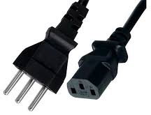
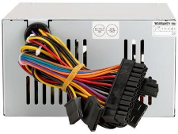
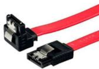
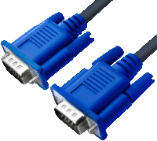
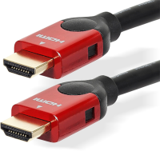
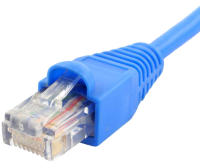
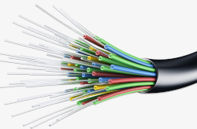

Os cabos são importantes em diversos dispositivos, servem para conectar componentes separados de uma placa ou até mesmo nelas (chamados de jumpers). Os cabos podem ser dividos em dois tipos cabos de alimentação e cabos de trasnferência, que podem ser subdivididos em outros grupos.
Cabos de Alimentação
Os cabos de alimentação são os mais comuns de serem vistos, se você está no cumputador pode observar cabos de alimentação em sua fonte e no monitor, se estiver no celular o seu carregador tem um cabo de alimentação. Eles fornecem energia aos dispositivos tanto pelo meio externo como interno, isso pode ser observado perfeitamente nos computadores uma vez que seus variados componentes de hardware funcionam com voltagens diferentes tendo cabos específicos para cada componente.
 Cabo de Alimentação comum em monitores e fontes.
 Cabos de uma fonte de alimentação comum.
Cabos de trasnferência
Os cabos de trasnferência são usados para trasnferir algum tipo de dado, porém alguns também podem ser usados como cabo de alimentação (o usb por exemplo).
Os cabos de trasnferência podem ser subdivididos ou outros tipos, sendo:
Cabo de Dados
Os cabos de dados geralmente são usados para trasnferir dados entre dispositivos, os mais comuns são os cabos SATA e USB sendo que os cabos USB, além de uma variedade de tipos, em alguns casos também podem ser usados como cabos de alimentação.
 Cabo SATA Cabo USB
Cabo de Vídeo
Usados em monitores e televisões, são responsáveis por trasnferir as informações de vídeo (e as vezes até o áudio, como é o caso do HDMI) para o dispositivo de saída.
 Cabo VGA
 Cabo HDMI
Cabo de Rede
Os cabos de rede são responsáveis por levar a internet até seu dispositivo, atualmente grande parte das conexões de internet é feita por meio de fibra óptica, porém ao chegar na sua casa ela é convertida para um cabo ethernet ou para sinal wi-fi.
 Cabo Ethernet
 Cabo de Várias Fibra Ópticas
Precauções
Ao manusear cabos de alimentação deve-se sempre verificar se estão desconectados da rede elétrica pois há riscos de choque elétrico, também é importante trocar cabos desencapados ou partidos.
Cabos de trasnferência defeituosos ou com mal contato podem ocasionar em dados corrompidos, para evitar que isso ocorra troque-os imediatamente após perceber o problema.